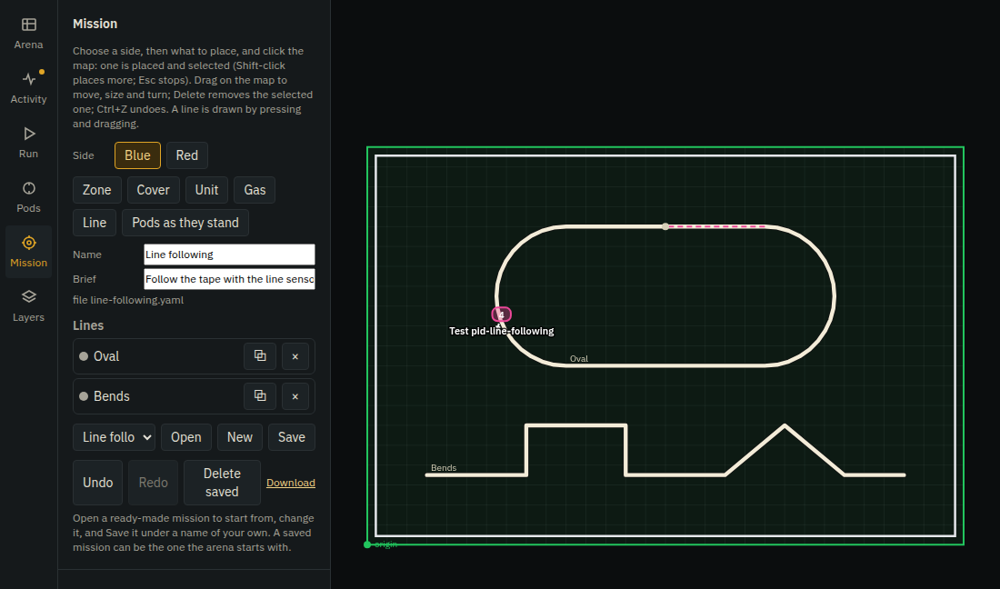

Set up activities
Everything the demo rooms do can be set up in your own room from the console.
- An activity: the Activity sheet lists them, each with how long it takes: Plain English and Infiltration (orders in plain English), and Pursuit, Route clearance and Patrol (programming). Choose one, then Run.
- A mission: the Mission sheet places zones to hold or take, cover, where each unit starts, gas, and lines on the floor. Open loads a ready-made one; Save keeps yours as a mission of your own.
- Lines for the line sensor: in the Mission sheet choose Line, then press and drag on the map. The line's card sets the tape's width. The ready-made Line following mission has the oval and the bends of the PID room.
- Hidden targets: the ready-made Swarm search mission hides the ten targets of the swarm room.
- A swarm: in the Arena sheet, set how many pods a student's program may drive (up to 8). Back to one when the room closes.
- ATAK: see ATAK.
